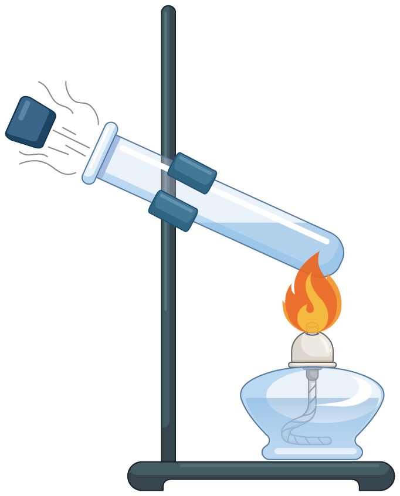
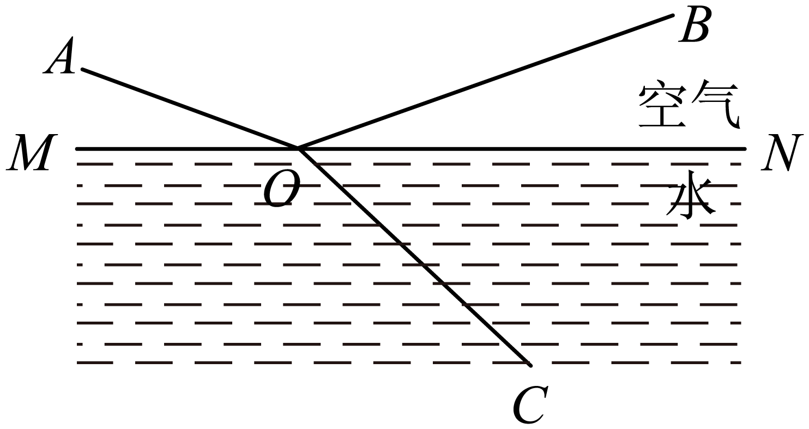
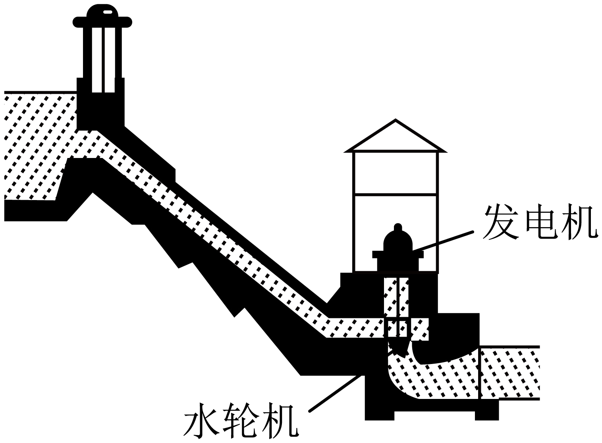
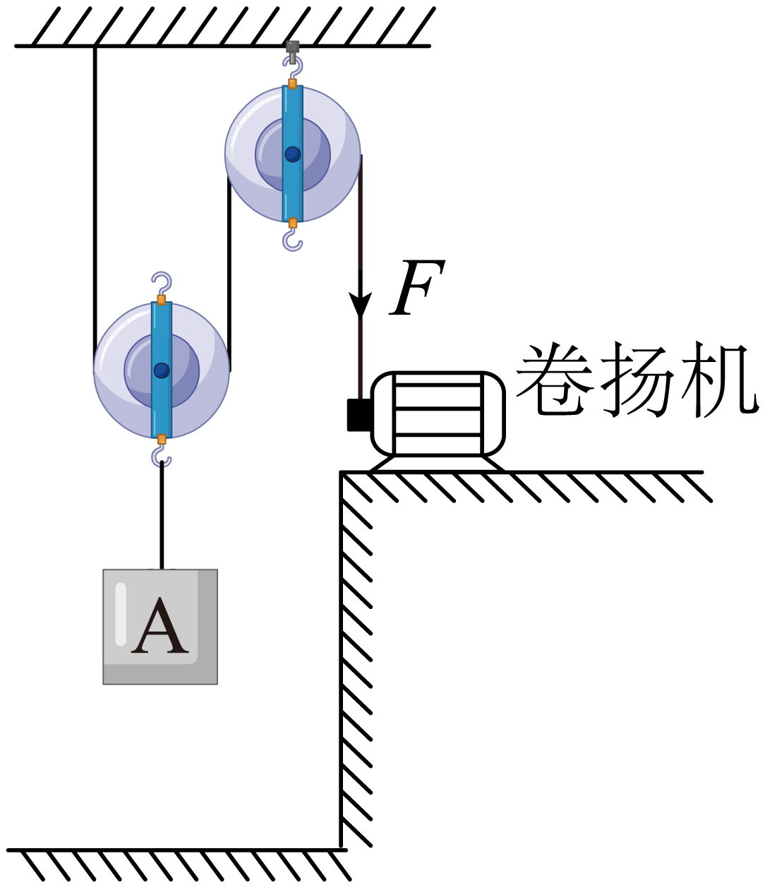

2023年北京市中考物理试题 · 选择题 第6、7、8、9、10题
6. 如图所示，在试管内装适量水，用橡胶塞塞住管口，将水加热一段时间后，橡胶塞被推出，管口出现大量“白气”。下列说法正确的是（ ）

A. 管口出现的“白气”是水蒸气
B. 水蒸气推出橡胶塞导致水蒸气内能增加
C. 水被加热的过程中，其内能是通过做功的方式改变的
D. 水蒸气推出橡胶塞的过程中，橡胶塞的动能是由水蒸气的内能转化来的
7. 如图所示，小京用水平推力推着购物车在水平地面上做匀速直线运动，下列说法正确的是（ ）
A. 小京对车的水平推力大于车受到的阻力
B. 车受到的支持力与车对地面的压力是一对平衡力
C. 若小京撤去对车的水平推力，车的运动状态将会发生改变
D. 若小京撤去对车的水平推力，小京仍对车做功
8. 一束单色光从空气斜射入水中的情境如图所示。下列说法正确的是（ ）

A. BO是入射光，OA是反射光
B. AO是入射光，OC是折射光
C. ∠AOM是入射角，∠BON是反射角
D. 光若沿CO入射，将沿OA和OB射出
9. 如图所示，人们修筑拦河坝来提高上游的水位，在坝底安装水轮机带动发电机发电。上游一定量的水，经水轮机流到下游的过程中，下列说法正确的是（ ）

A. 水的机械能不变
B. 水的重力势能增大，动能减小
C. 水轮机带动发电机发电，电能转化成机械能
D. 上游水位越高，能够发出的电能越多
10. 用如图所示的装置提升重为800N的物体A，动滑轮重为200N。在卷扬机对绳子的拉力F作用下，物体A在10s内竖直匀速上升了2m。在此过程中，不计绳重和摩擦，下列说法正确的是（ ）

A. 物体A上升的速度为0.4m/sB. 滑轮组的有用功为2000J
C. 拉力F的功率为100WD. 滑轮组的机械效率为80%